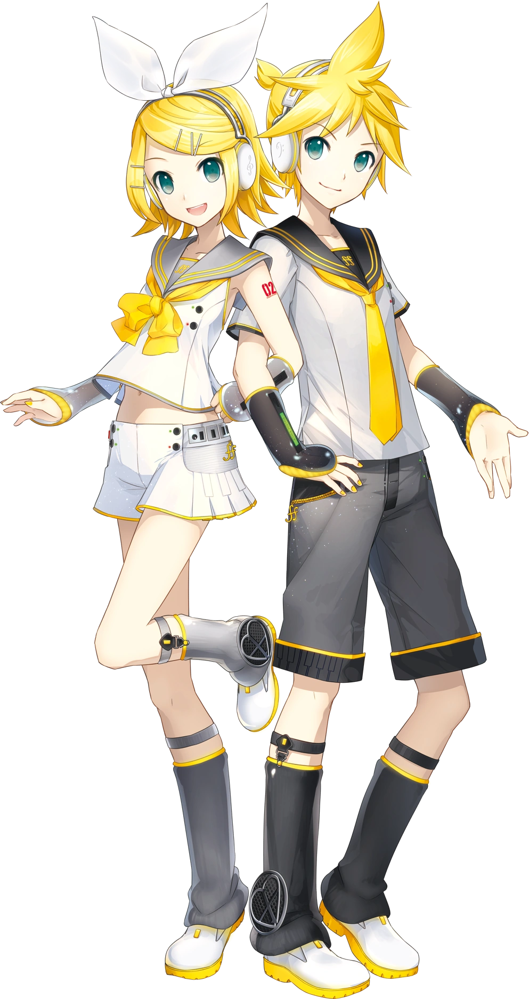
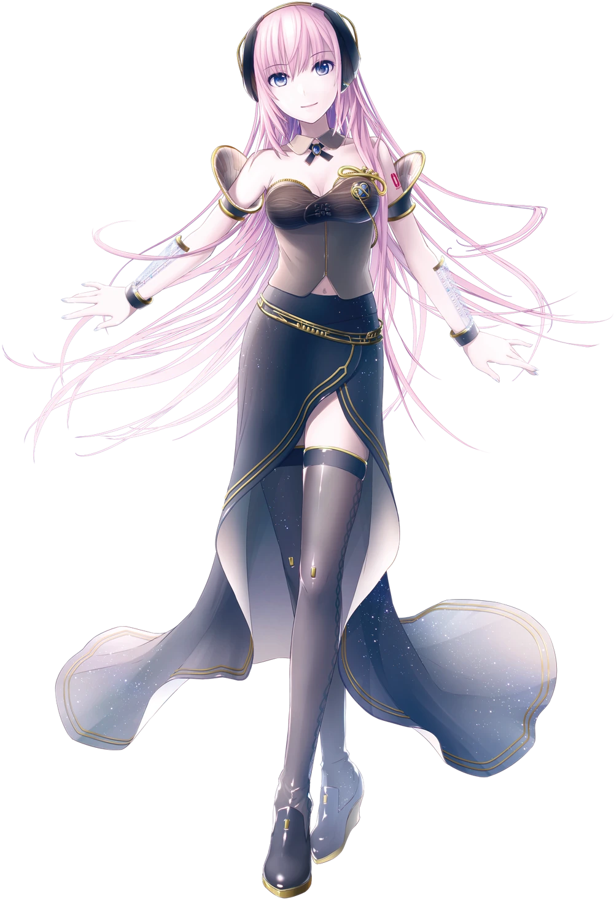
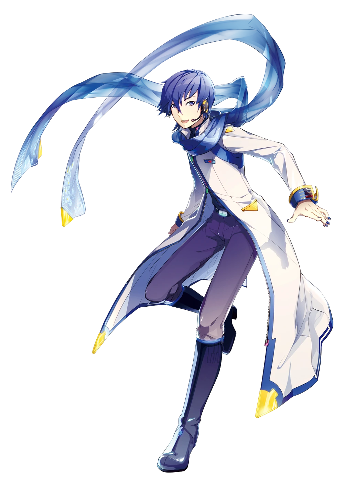
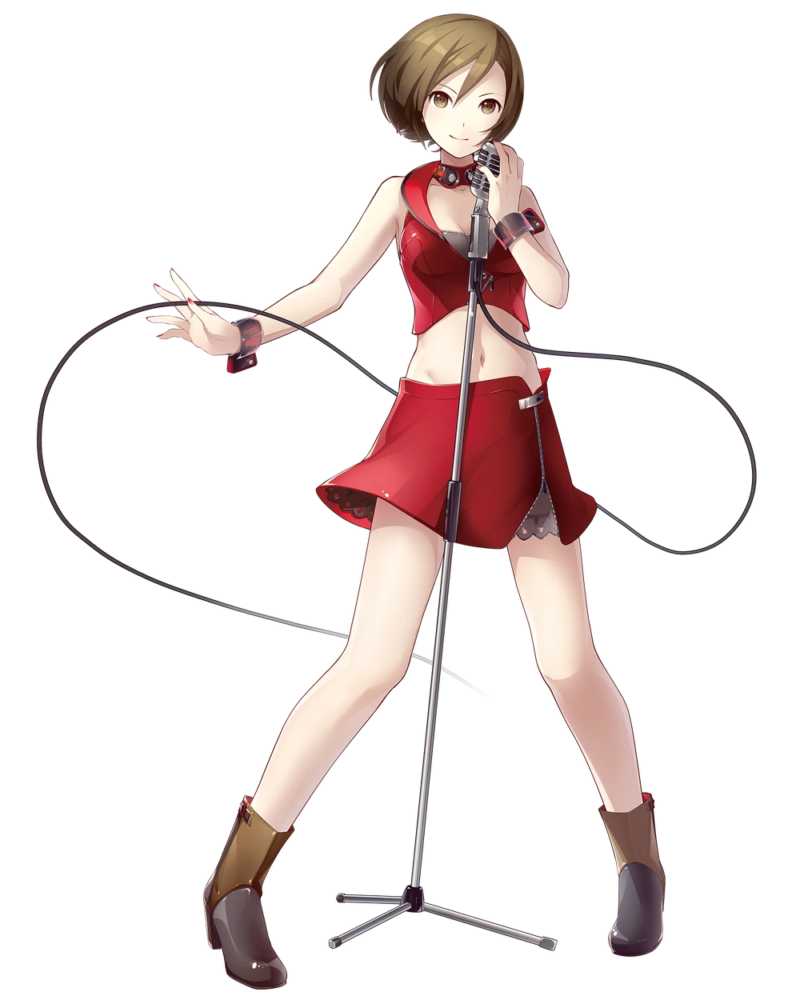
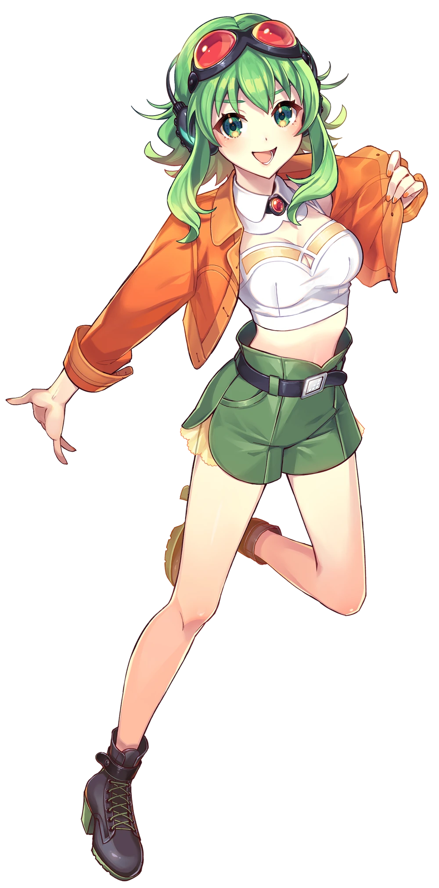
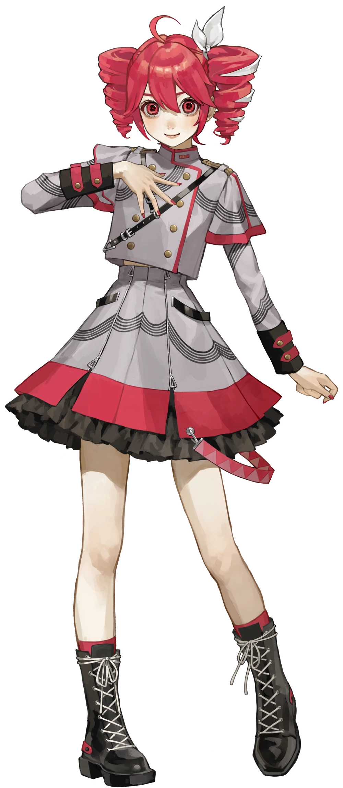
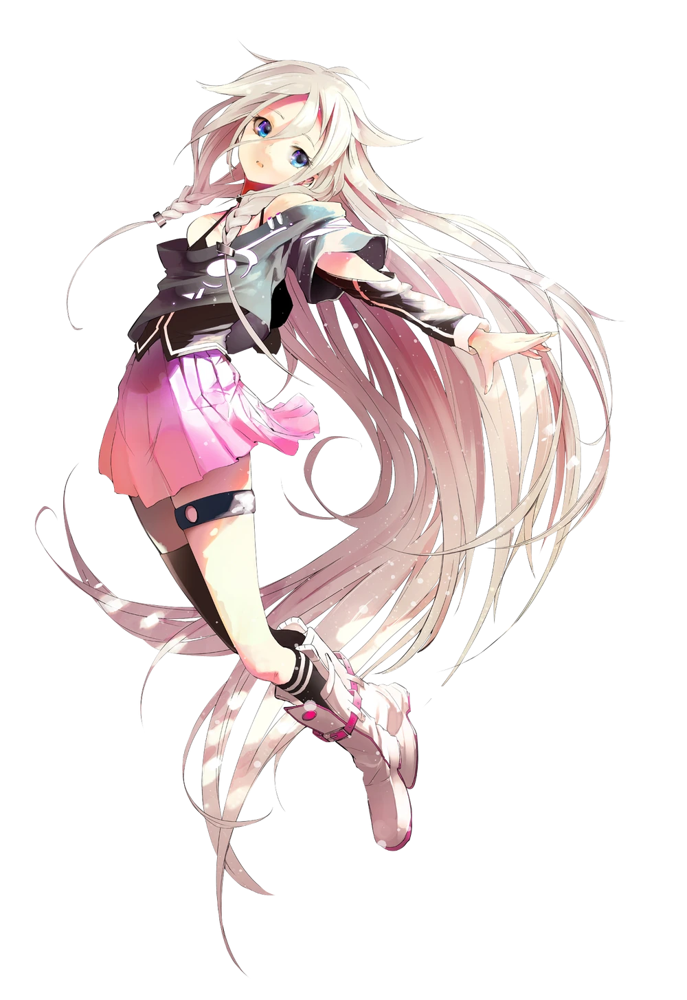

Make your music sing
Hatsune Miku is a virtual singer developed by Crypton Future Media and released in 2007 as part of the Vocaloid software. Her voice was created using samples from voice actress Saki Fujita. She is globally recognized as the main icon of Vocaloid, appearing in hologram concerts and thousands of songs created by users worldwide.

Kagamine Rin and Len are a Vocaloid duo developed by Crypton Future Media and released in 2007. Their voices were provided by voice actress Asami Shimoda. They are designed as “mirror” characters, often interpreted as siblings or a musical duo. Their voices are highly versatile and commonly used in energetic genres such as pop, rock, and electronic music.

Megurine Luka is a Vocaloid released in 2009 by Crypton Future Media, with her voice provided by Yū Asakawa. She was one of the first Vocaloids to support both Japanese and English. Her mature and soft voice makes her ideal for emotional songs and genres like jazz, pop, and electronic music.

Kaito is a Vocaloid developed by Crypton Future Media and released in 2006. His voice was provided by Naoto Fūga. He is one of the first male Vocaloids and is known for his deep and calm tone, making him well-suited for ballads and melodic songs.

Meiko was developed by Crypton Future Media and released in 2004, making her one of the earliest Vocaloids. Her voice was provided by singer Meiko Haigō. She is known for her strong and stable voice, suitable for a wide range of musical genres.



Gumi is a Vocaloid developed by Internet Co., Ltd. and released in 2009. Her voice was provided by singer Megumi Nakajima. She is known for her natural tone and versatility, which makes her very popular in genres such as pop, rock, and experimental music.
Kasane Teto is a voice synthesis character originally created as an April Fools’ joke in 2008, but she quickly gained popularity and became a voicebank for the UTAU software. Although she is not an official Vocaloid, she is highly loved by the community and widely used in songs.
IA is a virtual singer released in 2012, with her voice provided by singer Lia. She uses Vocaloid technology and later CeVIO AI. She is known for her clear and expressive voice, often used in electronic music and ballads.
Universidad Tecnologica El Retoño TDSM4B 4843